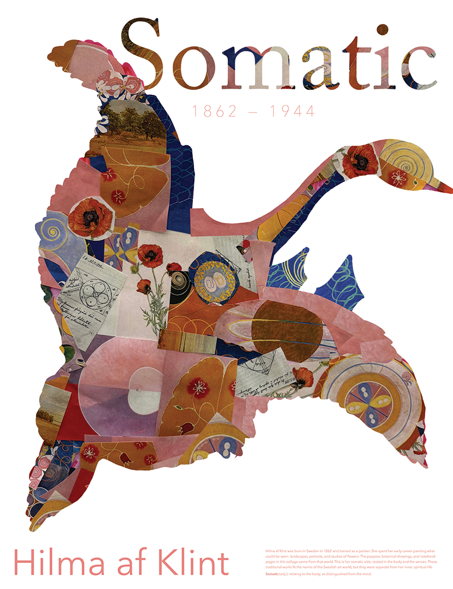
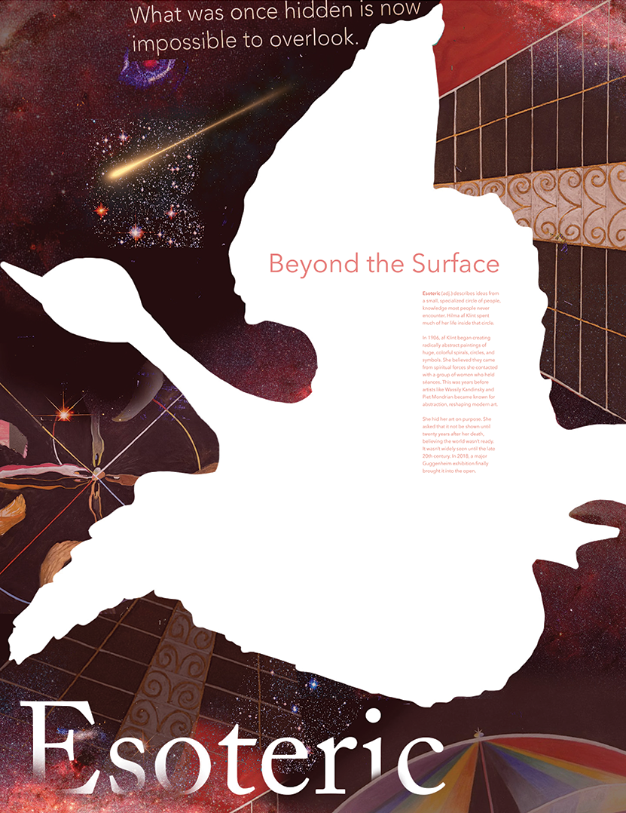
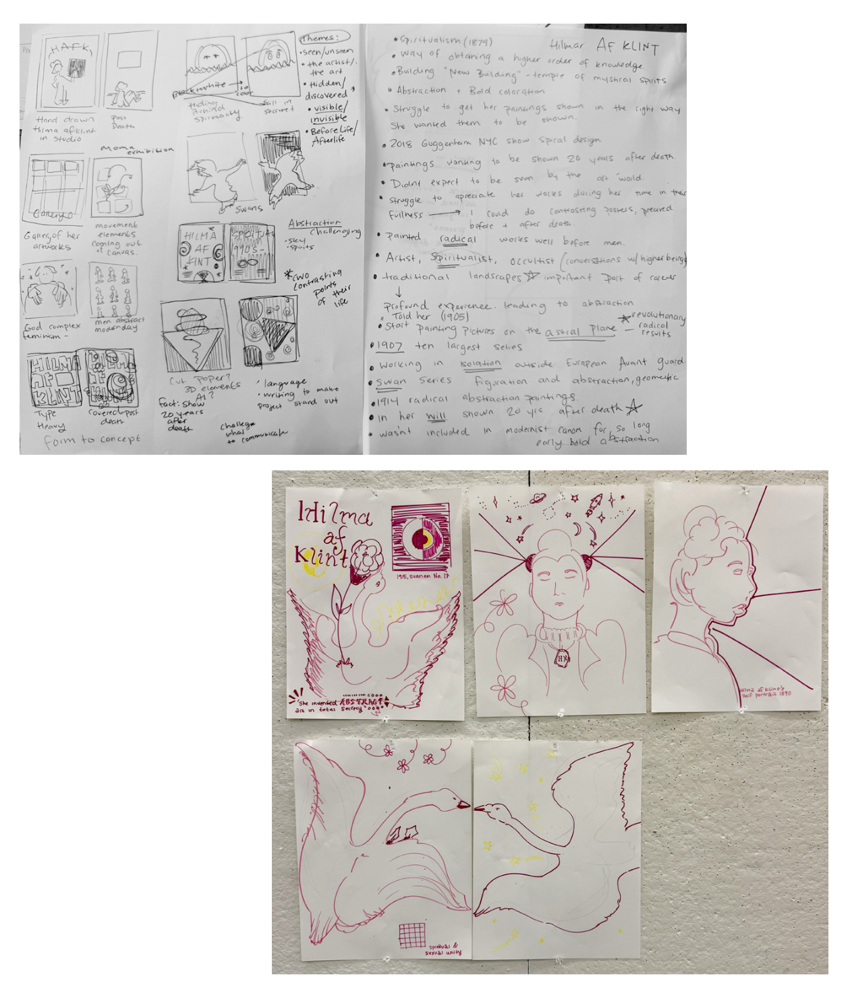
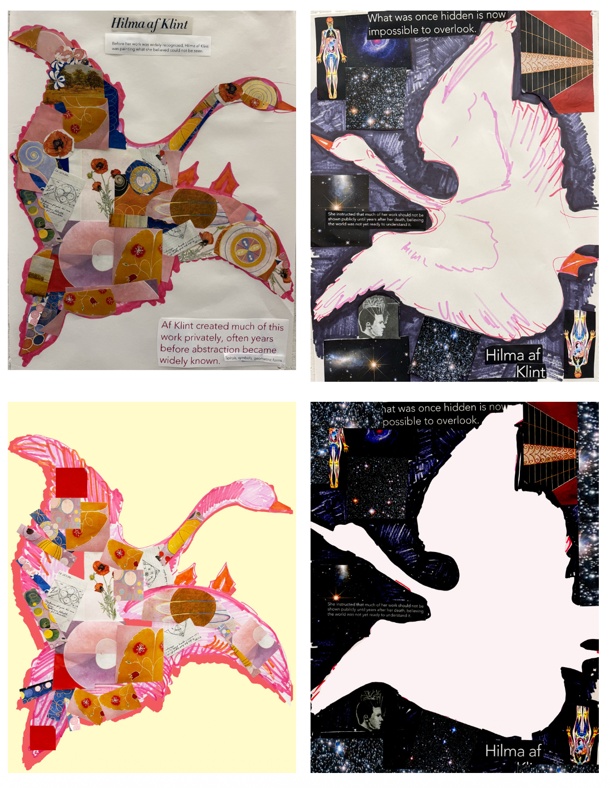
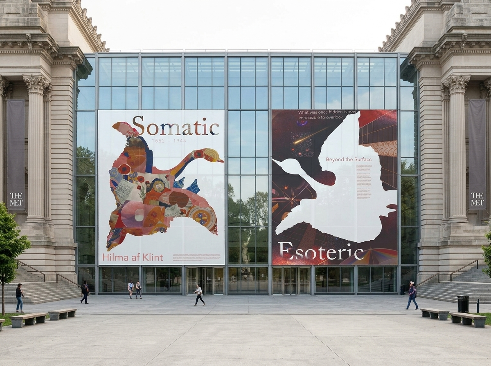

Hilma af Klint
Exhibition Campaign
A two-poster set exploring the tension between the spiritual and the physical in the life and work of Hilma af Klint.


Her work stayed unseen for twenty years after her death. The posters hold that tension between the spiritual and the physical.
Following the Swan
I was drawn to af Klint’s abstract paintings, and one motif stood out: the swan. Quick thumbnails led me to two swans early on.

Collage Over Concept
I built two large marker posters, collaging printed af Klint artwork inside and around the swans for strong black-and-white contrast. Then I digitized them and tested type in InDesign sketches.


Letting the Image Lead
I let the imagery shape the message and used type as image to show the contrast between af Klint’s esoteric spirituality and its physical, somatic side. Next, I want to bring more hands-on, analog making into my digital work.